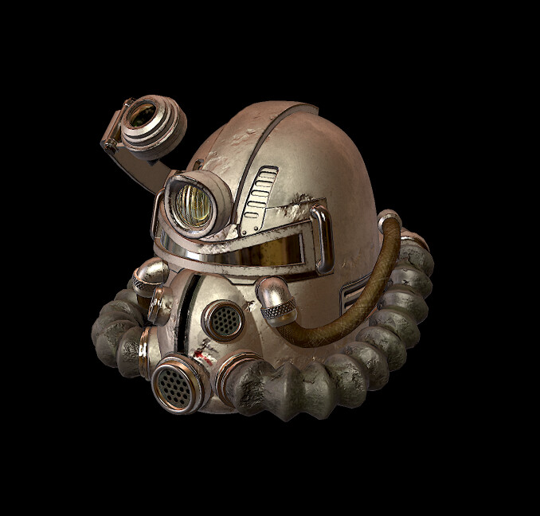

Welcome to my portfolio
Hi, I'm Izayah — a dedicated University of Cincinnati engineering student with hands-on experience in Python, MATLAB, LabVIEW, Visual Studio Code, and Siemens NXT.

About Me
I am pursuing engineering at the University of Cincinnati, where I focus on building practical solutions and growing my technical skills. I enjoy solving problems, learning new tools, and working on projects that bridge classroom learning with real-world systems.
Technical Skills
- Python
- MATLAB
- LabVIEW
- Siemens NXT
- Visual Studio Code
Core Strengths
- System design mindset
- Time Management
- Collaborative problem solving
- Continuous learning
Projects
Automation and Controls Practice
LabVIEW to develop control logic for robotics and automation tasks, improving reliability and repeatability.
Data Analysis with Python
Analyzed engineering data sets to uncover trends, validate performance, and support decision-making through clear charts and code-driven workflows.
NASAs Image of the day
Created a website in order to navigate images captured by NASALikes
When I'm not learning new technologies, I enjoy:
- Exploring robotics and automation
- Listening to Music
- Reading
- Hiking on trails